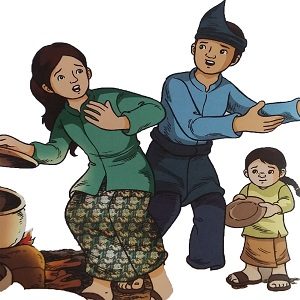

Putri Tangguk
( Cerita Rakyat Jambi )
Alkisah, di Negeri Bunga, Kecamatan Danau Kerinci Jambi, ada seorang perempuan bernama Putri Tangguk. Ia hidup bersama suami dan tujuh orang anaknya. Untuk memenuhi kebutuhan keluarganya, ia bersama suaminya menanam padi di sawahnya yang hanya seluas tangguk. Meskipun hanya seluas tangguk, sawah itu dapat menghasilkan padi yang sangat banyak. Setiap habis dipanen, tanaman padi di sawahnya muncul lagi dan menguning. Putri Tangguk dan keluarganya memanen padi di sawah mereka. Hasil panen itu mereka masukkan ke gerobak besar. Mereka mendorong gerobak bersama-sama. Di tengah perjalanan, tiba-tiba Putri Tangguk terjatuh. Putri Tangguk lalu mengambil padi yang baru dipanen dan diserakkan di jalanan.
Sejak panen terakhir itu, Putri Tangguk tak pernah lagi ke sawah. Ia lebih banyak berada di rumah, merawat anak-anaknya. Suatu malam, ketika Putri Tangguk tidur, anaknya yang bungsu merengek karena lapar. Putri Tangguk pergi ke dapur untuk mengambil nasi di panci namun ternyata kosong. Karena si bungsu terus merengek, Putri Tangguk memutuskan untuk menanak nasi lagi. Putri Tangguk kembali terkejut. Beras yang disimpannya di kaleng juga lenyap tak berbekas. Ia ingat betul, sebelumnya di kaleng itu masih banyak beras. Putri Tangguk tak bisa berpikir panjang. Ia sangat mengantuk. Dibujuknya si bungsu untuk tidur. Besok, ia akan mengambil padi di lumbung clan menumbuknya menjadi beras.
Pagi pun tiba, Putri Tangguk pun segera menyuruh suaminya mengambil padi di lumbung untuk ditumbuk. Alangkah terkejutnya sang Suami saat membuka salah satu lumbung padinya, ia mendapati lumbungnya kosong. Dengan perasaan panik, ia pun memeriksa satu per satu lumbung padinya yang lain. Namun, setelah ia membuka semuanya, tidak sebutir pun biji padi yang tersisa. Sang Suami pun tidak dapat berbuat apa-apa. Ia hanya tercengang penuh keheranan menyaksikan peristiwa aneh itu. Dengan perasaan sedih, Putri Tangguk dan suaminya pulang ke rumah.
Pada malam harinya, ia bermimpi didatangi oleh seorang lelaki tua berjenggot panjang mengenakan pakaian berwarna putih. Putri Tangguk belum sempat berkata apa-apa, orang tua itu sudah menghilang. Ia terbangun dari tidurnya saat hari mulai siang. Ia akan menjalani hidup bersama keluarganya dengan kesengsaraan. Ia sangat menyesali semua perbuatannya yang sombong dan takabbur dengan menyerakkan padi untuk pelapis jalan licin.